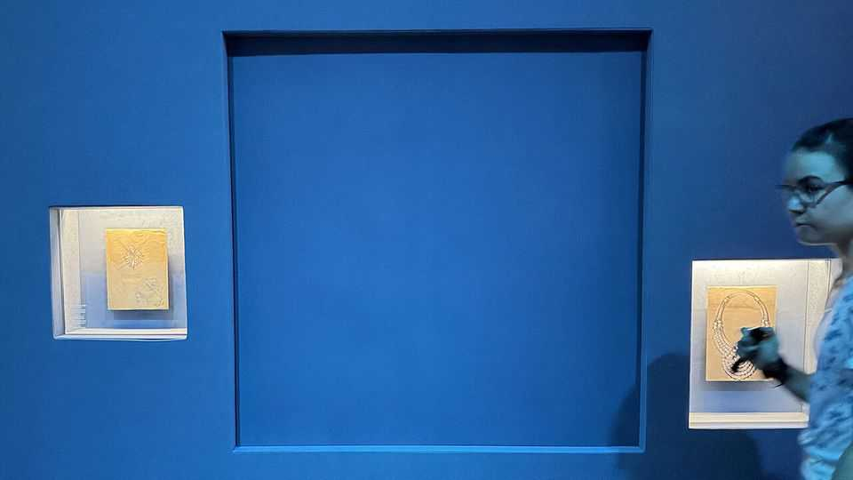

European museums are seeing a spike in high-value art theft
Forget cat burglars. Today’s thieves smash, grab and run

Oct 15th 2026
LILLI HOLLEIN, the director of Vienna’s Museum for Applied Art (MAK), has just been through the toughest six weeks of her career. On August 27th two armed thieves stole a platinum necklace bedecked with 673 diamonds, designed by Van Cleef & Arpels in 1939 for Queen Nazli of Egypt, from a special exhibition at the museum. Wearing no masks, they entered the neo-Renaissance building on Vienna’s Ringstrasse, bought tickets, wandered into the exhibition and smashed the armoured display case with 41 blows from a hammer they had hidden in their clothes. Snatching the necklace, valued at more than $4m, they made off on foot through the adjacent Stadtpark.
The MAK reopened the next day, having belatedly installed metal detectors at the entrance, securing the doors long after the crooks had bolted. In subsequent weeks Ms Hollein, whose tenure as director had been extended by five years this spring, came under fire for lax security. On October 2nd an independent investigation found that the MAK and its staff behaved properly: had anyone tried to take on the thieves, they might have endangered themselves and the 104 visitors who were in the show. The museum had deployed 185 video cameras, 125 alarm sensors, special safety glass and trained guards. Yet the report concluded that such thefts by professionals cannot be prevented with reasonable measures.
That claim seems bizarre. It cannot be impossible to stop hoods from walking into museums and nicking the art. (Had someone thought of metal detectors earlier, they would have spotted the thieves’ hammer and pistol.) Rather, it seems the threat has risen and the response remains inadequate. European museum directors, Ms Hollein says, are confronted with a new type of violent and brazen theft. The robberies are often smash-and-grab attacks that last just a few minutes. It usually takes four to five minutes for the police to arrive. Global losses from art theft for museums and galleries are estimated to amount to $8bn annually.
“Art theft has always existed,” says Anthony Amore, head of security at the Isabella Stewart Gardner Museum in Boston, the site of the most notorious art theft since the second world war. (In that crime in 1990, 13 masterpieces worth about $500m were stolen.) Essentially every major museum in the world has been robbed, says Mr Amore, though most thefts are small. But he notes an increase in high-value robberies in Europe, where one finds first-rate art even in small provincial museums. Many European collections are displayed in old buildings that are tricky to secure. In August thieves stole four masterworks by Antonello da Messina, worth up to €80m ($89m), in a provincial town in Sicily. In September two burglars broke into the Renoir museum, in Cagnes-sur-Mer in France, and made off with two paintings valued at €4.2m.
Spectacular robberies, such as last year’s theft of jewellery worth €90m from the Louvre in Paris, can create a vicious circle. Thieves may not be cat burglars any more but many are copycats, says Arthur Brand, a Dutch art-crime investigator. Just 12 hours after the Louvre robbery, some 2,000 gold and silver coins were stolen from a museum in Langres in north-eastern France. Thieves increasingly focus on jewellery and gold coins, which can be dismantled or melted down for sale. (Renoirs or Rembrandts are almost impossible to sell, and are taken chiefly for ransom.) In 2017 a massive 100kg gold coin was stolen from Berlin’s Bode museum by members of the Remmo clan, a notorious Berlin crime family. In 2019 other clan members made off with 18th-century jewellery containing more than 4,300 diamonds from the Green Vault in Dresden, worth at least €113m.
Only around 10% of stolen art is ever found. But most of the Green Vault jewellery was recovered after Remmo clan members were arrested and confessed. And this month six people were arrested for the theft of the Renoirs in Cagnes-sur-Mer; the two paintings were recovered. French police used DNA and mobile-phone data to track down the suspects, and arrested them when one visited another museum—probably, the police said, not “simply out of love for art”.
High-tech solutions, such as display cases that drop through the floor when assaulted, are expensive. But few European museums even have metal detectors. Many do not have their own security chief; they may share one with several others. Curators tend to focus on fund-raising and high-profile exhibitions, and pay less attention to protective measures until something goes wrong. Mr Amore says they need to develop multiple layers of protection, equip guards with better communication systems and develop strong relationships with local police. AI-enabled security cameras could deliver better warnings. But there is no way to render museums entirely safe. Displaying art to the public will always make it possible for a thief to grab it. ■